웹 분석이 하는 일과 GA4 첫걸음
퍼포먼스 마케팅은 광고비가 어디서 고객을 데려오고 어디서 새는지를 숫자로 보면서 굴리는 마케팅이에요. 영상 도입부는 노출, 클릭, CTR(Click-Through Rate), CPC(Cost Per Click), 전환, CAC(Customer Acquisition Cost), ROAS(Return On Ad Spend)를 이 과정에서 다룰 숫자로 꼽아요. 광고로 방문자 수천 명을 모아도 팔리지 않는 이유는 클릭한 다음 사람들이 무엇을 했는지에서 찾아야 한다는 얘기예요.
측정하고, 분석하고, 보고하고, 그다음 고치기
강사는 웹 분석을 '데이터를 측정하고 분석하고 보고하는 과정'으로 정의해요. 그런데 거기서 멈추면 안 된다고 여러 번 말해요. 숫자에서 배운 게 다음 캠페인에 반영되지 않으면 분석할 이유가 없어요. '18~25세가 잘될 거야' 같은 짐작 대신 가설을 세우고 A/B 테스트로 확인한 뒤 숫자를 보고 정하는 걸 데이터 기반 의사결정이라고 불러요.
슬라이드는 분석 계정을 쓰는 흐름을 다섯 단계로 그려 둬요. 보기와 필터 설정 → 대시보드 설정 → 기본 보고서 읽기 → 기본 분석 → 목표 설정과 성과 추적이에요. 강사는 특히 대시보드를 필요한 숫자만 모아 직접 꾸미라고 해요. 데이터를 처음 보면 헷갈리기 쉬우니, 볼 것만 모아 두라는 뜻이에요.
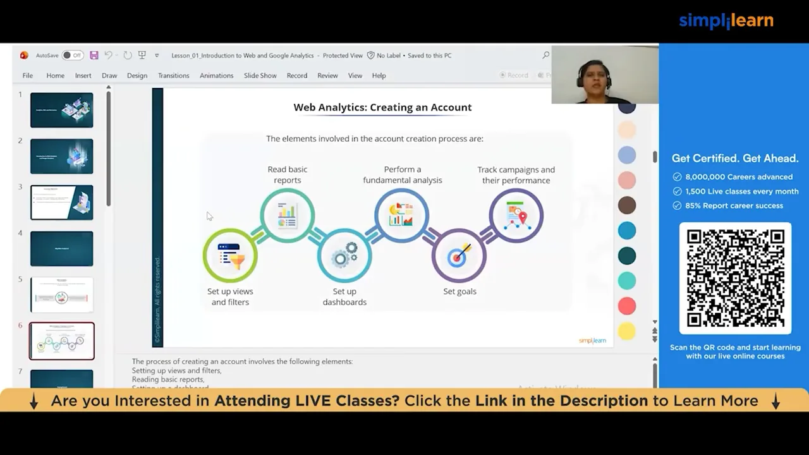
사기 전까지의 세 단계
고객이 사기 전까지의 단계는 획득 → 행동 → 전환 깔때기로 봐요. 강사 예시는 아파트 구매예요. 검색하다 광고를 보고 사이트에 연락처를 남기는 게 획득, 영업팀 연락을 받으며 고민하는 과정이 행동, 실제 계약이 전환이에요. 전환이 안 됐다면 행동 단계에서 무엇이 틀어졌는지를 분석 도구로 찾아요.
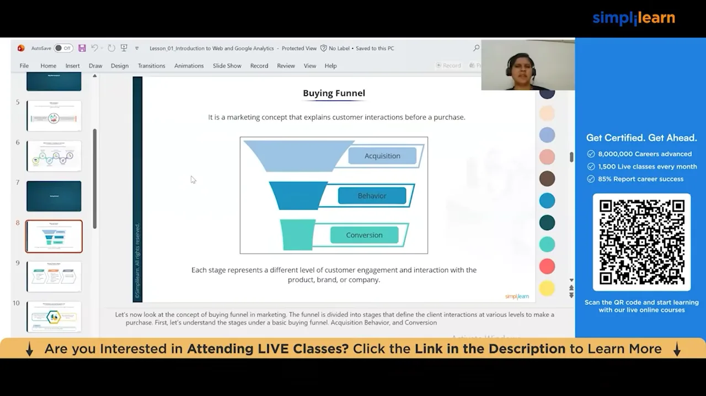
분석 도구로 얻는 세 가지
슬라이드의 세 줄은 각각 타기팅, 쇼핑 습관, 캠페인·웹사이트 개선이에요. 강사가 덧붙인 예시를 보면 마케팅 밖의 결정까지 숫자로 해요.
- 타기팅: 사이트에 오는 사람이 어느 채널에서 오는지, 관심사·나이·성별이 어떤지 보고 광고 대상을 정해요.
- 재고 관리: '뭄바이에선 티셔츠, 푸네에선 하의가 잘 팔린다'면 지역별 재고를 미리 깔아요. 안 팔리는 상품은 1+1이나 사은품으로 돌려요.
- 웹사이트 설계: 히트맵 도구로 어디서 오래 머무르고 어디를 누르는지 보고 페이지 구조를 고쳐요.
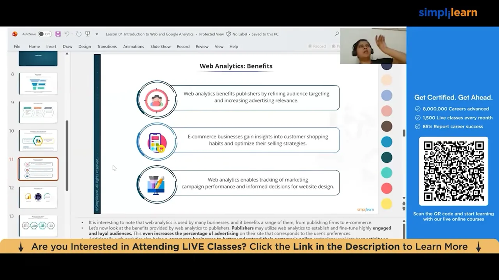
도구는 Google Analytics(GA(Google Analytics))가 기본이에요. 강사는 GA를 알면 Adobe Analytics나 Webtrends도 대시보드만 다를 뿐이라 일주일이면 익힌다고 봐요. 연습할 사이트가 없으면 GA 데모 계정을 쓰면 돼요. Google이 자기 굿즈 쇼핑몰(Google Merchandise Store)에 GA를 붙여 두고 그 계정을 누구에게나 열어 둔 거라, 실제 데이터가 아주 많아요.
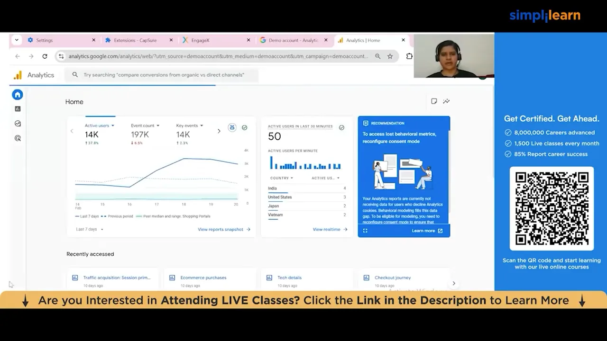
GA4 계정을 만드는 순서
강사는 연습용 계정을 하나 만들며 흐름만 보여 줘요(제대로 된 설치는 9장에서 다시 해요).
- 관리 → 만들기 → 계정 — 계정 이름은 회사 이름으로 넣어요. 사이트마다 GA 계정을 따로 만들고, 나라별 사이트가 따로 있으면 그것도 따로예요.
- 속성 이름, 보고 시간대, 통화 — 주력 시장 기준이에요. 매출 대부분이 인도에서 나면 인도 시간대와 INR(Indian Rupee)을 골라요. 이 시간대 기준으로 데이터가 보여요.
- 업종, 규모, 목적 — 리드 생성, 판매, 트래픽 이해, 참여 가운데 고르고, 없으면 '기타 목적'을 골라요.
- 데이터 스트림 — 웹, 안드로이드 앱, iOS 앱 중 고르고 사이트 URL(Uniform Resource Locator)을 넣어요.
- 추적 코드 붙이기 — 나온 코드를 사이트 모든 페이지에 넣어야 수집이 시작돼요.
아래 화면이 데모 계정의 코드예요. 강사는 코드 모양은 누구나 같고, 파란 줄 안의 측정 ID(Identifier) 부분만 계정마다 다르다고 짚어요. 큰 회사라면 이 코드를 개발자에게 넘기거나 Google 태그 관리자로 넣어요.
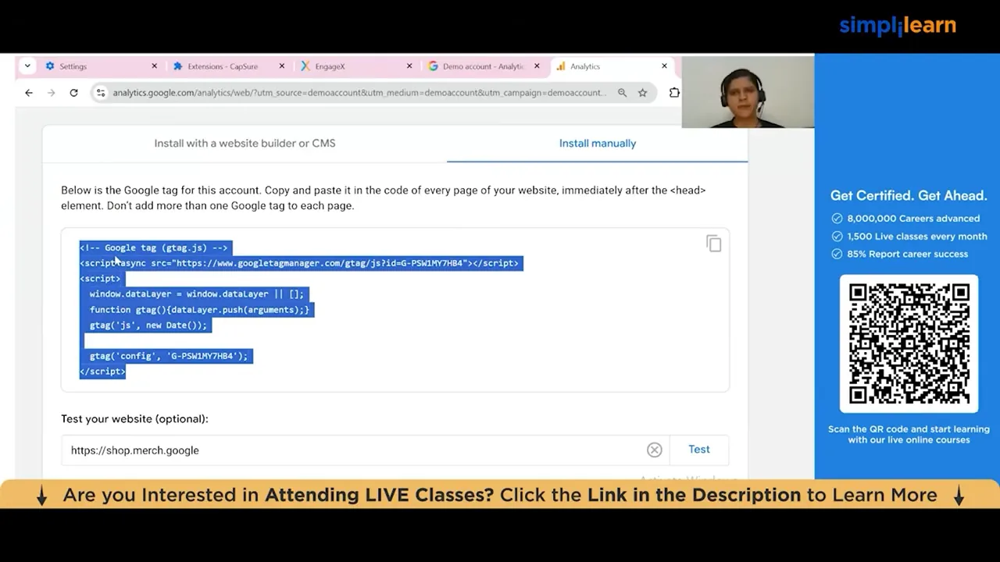
기업이 가장 먼저 보는 네 숫자와 보고서 지도
슬라이드가 꼽은 네 가지는 페이지뷰(어떤 페이지를 보나), 순방문자(몇 명이 오나), 이탈률(몇 명이 바로 나가나), 체류 시간(얼마나 머무나)이에요. GA는 웹사이트뿐 아니라 앱도 따로 설정해서 잴 수 있어요.
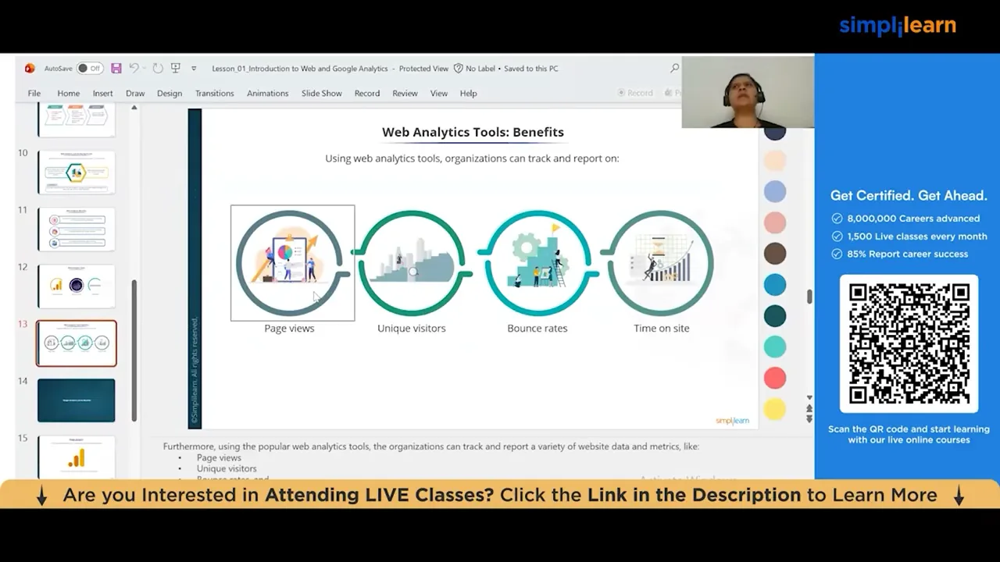
강사는 이어서 Word 문서에 보고서 지도를 적어 줘요. 클라이언트는 '올해 1월과 작년 1월의 18~24세 성과를 비교해 줘' 같은 질문을 불쑥 던지는데, 어느 보고서로 가야 하는지 알아야 답할 수 있어서 이 목록은 외우라고 해요.
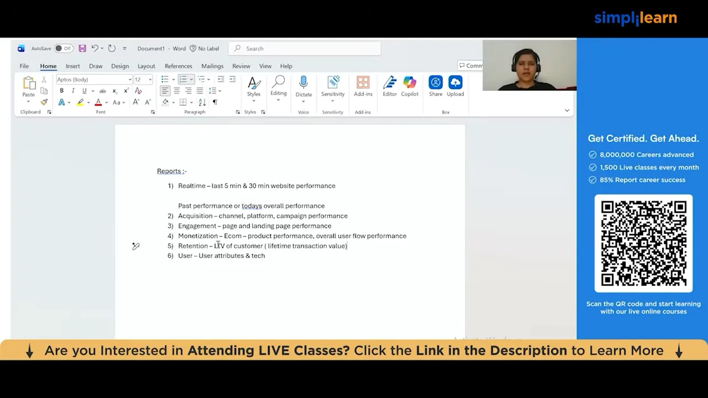
| 클라이언트가 이걸 물으면 | 여기로 가요 |
|---|---|
| 지금 사이트에 누가 있나 (최근 5분·30분) | 실시간 |
| 소셜이 검색보다 나은가, Meta가 Google보다 나은가 | 획득 |
| 어느 페이지, 어느 랜딩 페이지가 잘하나 | 참여 |
| 어느 상품이 팔리나, 장바구니·결제 어디서 빠지나 | 수익화 (이커머스 전용) |
| 얼마나 다시 오나, 고객 한 명이 얼마를 쓰나 | 유지 |
| 나이·성별·도시 / 브라우저·기기·폰 모델 | 사용자 속성 / 기술 |
실시간·획득 보고서 읽기
실시간 보고서는 세일 날 켜 두는 화면
실시간 개요는 최근 30분·5분 활성 사용자, 접속 지역 지도, 유입 채널, 보고 있는 페이지, 이벤트를 보여 줘요. 데모 화면에선 최근 30분에 42명, 5분에 5명이 있었고, 지도엔 아마다바드·콜카타·첸나이·벵갈루루·푸네 점이 찍혀 있었어요(푸네는 강사 자신이었대요).
강사는 이 보고서를 매일 보지 않는다고 해요. 블랙프라이데이, 디왈리 세일, 1루피 행사, 신제품 출시처럼 트래픽이 몰리는 날에 사람들이 정말 오는지 지켜봐요. 뭄바이에서 몰리면 그쪽 재고를 챙기고, 소셜에서 몰리면 소셜 광고를 늘리는 식으로 바로 움직여요.
아래 화면 왼쪽이 이벤트 이름별 집계예요. page_view 52, session_start 35, view_item_list 34, first_visit 33 순이고, 오른쪽 키 이벤트 칸은 그 순간 데이터가 없었어요.
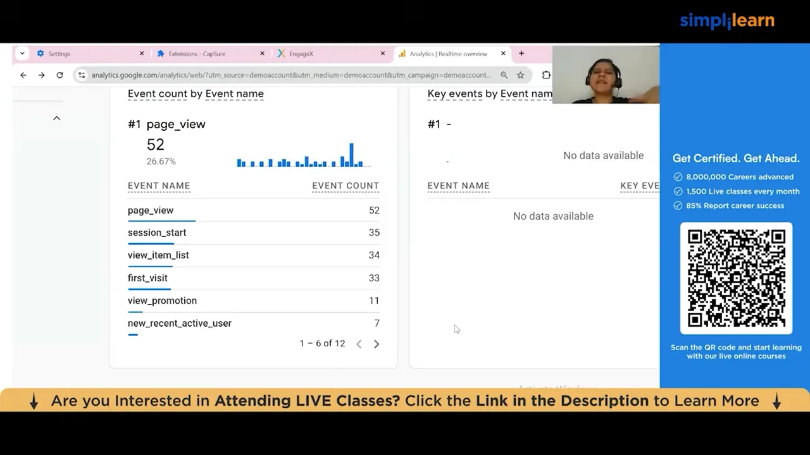
키 이벤트는 브랜드가 직접 정해요. 그냥 스크롤한 건 이벤트지만, 상품을 장바구니에 담은 건 키 이벤트예요. 데모 계정은 구매, 장바구니 담기, 상품 조회 세 가지를 키 이벤트로 정해 뒀어요. 실시간 개요의 잠재고객 목록(비구매자, 75% 스크롤한 사람 등)도 기본값이 아니라 이 쇼핑몰이 직접 만든 거예요.
어느 보고서에서나 같은 조작법
각 보고서의 '개요' 탭은 급할 때 한눈에 보는 요약이라 처음엔 건너뛰고, 세부 보고서로 바로 들어가라고 해요. 조작법은 어느 보고서에서나 같아요.
- 날짜 범위를 질문에 맞췄나요? 비교 토글을 켜면 '2026년 1월 vs 2025년 1월'처럼 비교해요. 달력으로 고르다 꼬이면 날짜를 직접 입력해요.
- 그래프로 보여 주나요? 표는 클라이언트에게 지루해요. '1월 22일에 사용자가 튀었고 11일에 크게 빠졌다'처럼 그래프로 짚어 줘요.
- 페이지당 행 수를 최대로 올렸나요? 기본 10줄이라 97개 중 10개만 보일 수 있어요. 다음 페이지도 확인해요.
- 정렬했나요? 열 머리의 화살표를 누르면 높은 순으로 정렬돼서 다른 페이지를 넘길 필요가 줄어요.
- 검색창으로 거르나요? 'Direct'나 'New York'처럼 질문에 나온 단어로 표를 좁혀요.
측정기준을 바꿔 가며 쪼개 보기
표의 맨 왼쪽 열이 측정기준, 오른쪽 숫자 열이 측정항목이에요. 아래는 데모 계정의 2026년 1월 사용자 획득 보고서예요. 총사용자 43,291명 중 신규 31,774명이고, Direct가 23,475명(54%)으로 가장 많고 Organic Search가 11,636명으로 뒤를 이어요. 평균 참여 시간은 1분 33초인데, Organic Video는 6초뿐이라 강사는 채널 자체에 문제가 있다고 봐요.
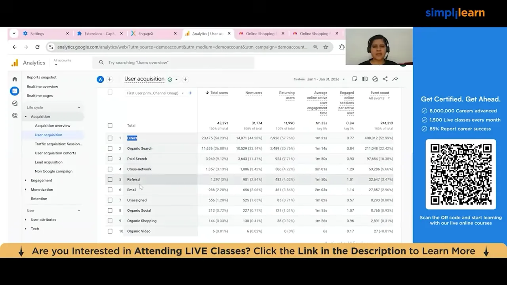
채널 이름은 이렇게 읽어요. Direct는 주소창에 사이트 주소를 직접 쳐서 온 사람, Organic Search는 SEO로 검색 결과를 눌러 온 사람, Paid Search는 검색 광고로 온 사람, Organic Social은 소셜 미디어로 온 사람이에요.
클라이언트가 'Organic Search가 둘째라는데 Google이야, Bing이야?'라고 물으면 기본 측정기준을 채널에서 '첫 사용자 소스/매체'로 바꿔요. 그러면 google / organic, bing / organic, google / cpc처럼 플랫폼 단위로 쪼개져요. 캠페인 이름으로 보고 싶으면 '캠페인'을 고르면 돼요.
더 깊이 '직접 유입은 어느 도시에서 왔나'를 물으면 측정기준 옆 + 버튼으로 보조 측정기준(도시)을 붙여요. 표가 107쪽으로 늘어나니 검색창에 Direct를 쳐서 좁혀요.
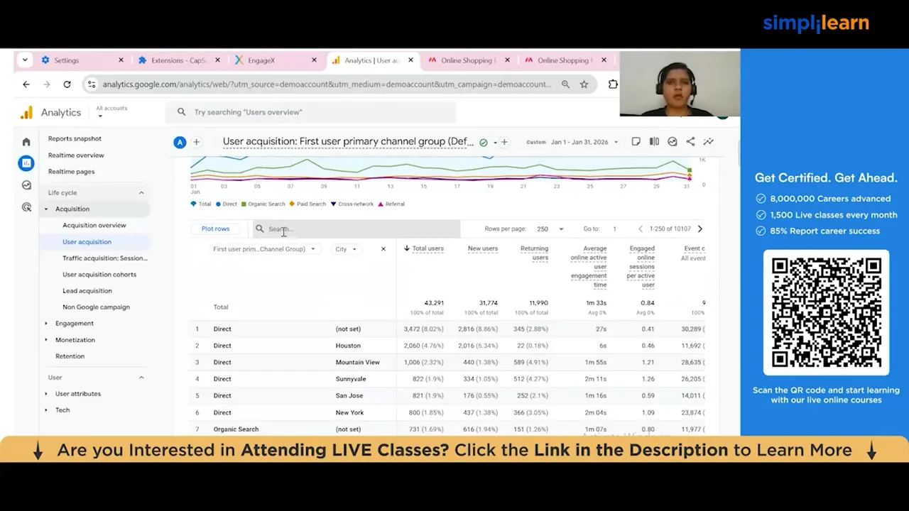
'구매가 몇 건이냐'고 물으면 이벤트 수 열을 그대로 읽으면 안 돼요. 모든 상호작용을 합친 숫자라서요. 키 이벤트 드롭다운에서 purchase를 골라야 하고, 그러면 1월 직접 유입 구매는 545건이었어요. 위시리스트 담기를 물으면 그 이벤트로 바꿔요(409건).
사용자 획득과 트래픽 획득의 차이
두 보고서는 측정기준이 같아서 헷갈려요. 차이는 두 가지예요.
| 사용자 획득 | 트래픽 획득 | |
|---|---|---|
| 세는 단위 | 사용자 (순방문자, 43,291) | 세션 (방문 횟수, 52,893) |
| 한 사람이 세 번 오면 | 1명 | 세션 3개 |
| 매출 | 안 보여요 | 총매출 열이 있어요 |
| 이런 질문에 | '몇 명이 왔어?' | '트래픽 전체는? 매출은?' |
강사는 세션을 클릭과 비교해서 설명해요. 광고 어딘가를 누른 게 클릭, 그중 링크를 누른 게 링크 클릭, 그중 실제로 사이트가 열려 머문 게 세션이에요. 인터넷이 끊기거나 바로 뒤로 가면 링크 클릭은 있어도 세션은 없어요. 그래서 숫자는 늘 아래 그림처럼 줄어들고, 브랜드는 광고 플랫폼의 클릭보다 GA의 세션을 더 믿어요.
세션 규칙과 참여·수익화·유지·사용자 보고서
세션은 언제 끊기나요
강사는 인터넷뱅킹에 비유해요. 탭을 열어 둔 채 다른 일을 하다 돌아오면 '세션이 만료됐습니다'가 뜨죠. GA도 비슷하게 세션을 끊는다고 해요. 강사가 메모에 적은 규칙은 두 가지예요.
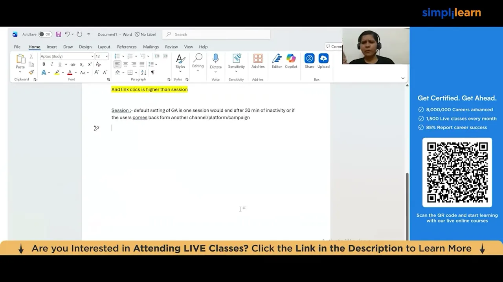
예시는 이래요. 9시 50분에 Myntra에 직접 들어왔다가 다른 탭에서 놀아요. 10시 20분 전에 돌아오면 첫 세션이 이어지고, 10시 25분에 돌아오면 첫 세션이 끝나고 둘째 세션이 시작돼요. 같은 시간 안이라도 이번엔 광고를 눌러 들어오면 새 세션이라고 설명해요.
강사는 30분이 너무 길다고 봐요. 일반 사이트라도 2~3분, 길어도 5분이 맞다고 하고, 실제로 9장에서 5분으로 바꿔요.
획득 보고서의 나머지 메뉴
- 사용자 획득 코호트: 채널별 '평균 120일 가치', 즉 첫 120일 동안의 구매·구독·광고 수익 합을 보여 줘요. 강사는 계산 방식을 알 수 없어 잘 안 본다고 해요.
- 리드 획득: 신규 리드 → 적격 리드 → 전환된 리드. 리드 생성 사업용이라 쇼핑몰인 데모 계정에선 모두 0이에요.
- 비Google 캠페인: Meta 같은 다른 광고의 성과예요. 광고 링크에 UTM(Urchin Tracking Module) 매개변수를 붙여야 여기 잡혀요. 붙이지 않으면 GA에서 그 캠페인을 볼 수 없어요.
참여 보고서: 어느 페이지가 약한가
참여 보고서에선 '페이지 및 화면'과 '방문 페이지' 두 개만 보면 된다고 해요. 페이지 및 화면은 사이트 전체 페이지의 조회수, 사용자, 평균 참여 시간, 이벤트, 매출을 보여 줘요. 조회수는 한 사람이 여러 번 볼 수 있어서 늘 사용자 수보다 커요.
체류 시간이 짧은 페이지가 고칠 곳이에요. 데모 계정은 홈페이지 체류가 18초뿐이었고, 거의 아무도 머물지 않는 카테고리 페이지도 있었어요. 방문 페이지 보고서는 광고, 인플루언서, 제휴 마케팅에 걸어 둔 URL만 따로 모아 보여 줘요.
수익화 보고서: 상품과 구매 흐름
수익화는 이커머스 전용이에요. '전자상거래 구매'는 상품(item name)별 조회 → 장바구니 → 구매 수와 매출을 보여 줘요. 강사가 짚은 읽는 법은 이래요.
- 매출 기준으로 정렬해요. 구매 건수보다 매출이 우선이에요. 매출이 높은 건 평균 주문 금액(AOV(Average Order Value))이 커서일 수도 있어요.
- 조회 2,137번인데 장바구니 282건인 상품과, 조회 347번인데 장바구니가 많은 상품을 비교해요. 흐름 전체를 봐야 해요.
- 조회도 장바구니도 없이 구매만 찍힌 상품(Google Unisex Eco 블랙 제품)은 추적 코드 오류예요. 이 보고서로 추적이 제대로 되는지도 확인해요.
- 잘 팔린 상품에 도시·나이·성별·채널을 붙이면 어디에 재고를 두고 어느 채널로 밀지, 무엇을 업셀·크로스셀할지 정할 수 있어요.
구매 여정은 세션 시작 → 상품 조회 → 장바구니 → 결제 시작 → 구매 다섯 단계를 기기별로 비교해요. 아래 2025년 데이터에서 모바일은 세션 시작이 371,603으로 데스크톱(355,568)보다 많아요. 그런데 장바구니부터 뒤집혀서, 구매는 모바일 1,191, 데스크톱 11,389였어요.
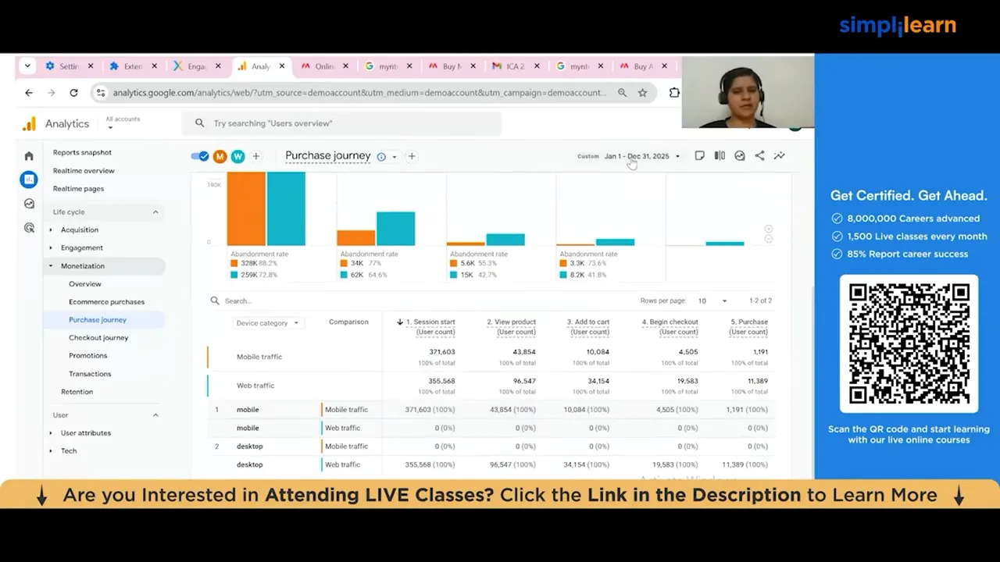
결제 여정은 구매 여정에서 뭉뚱그린 '결제 시작 → 구매' 사이를 쪼개요. 결제 시작 → 배송 정보 입력 → 결제 수단 입력 → 구매예요. 아래 화면에선 배송 정보까지는 99.7%가 따라왔는데, 결제 수단 입력에서 73.3%, 구매에서 59.8%로 떨어졌어요.
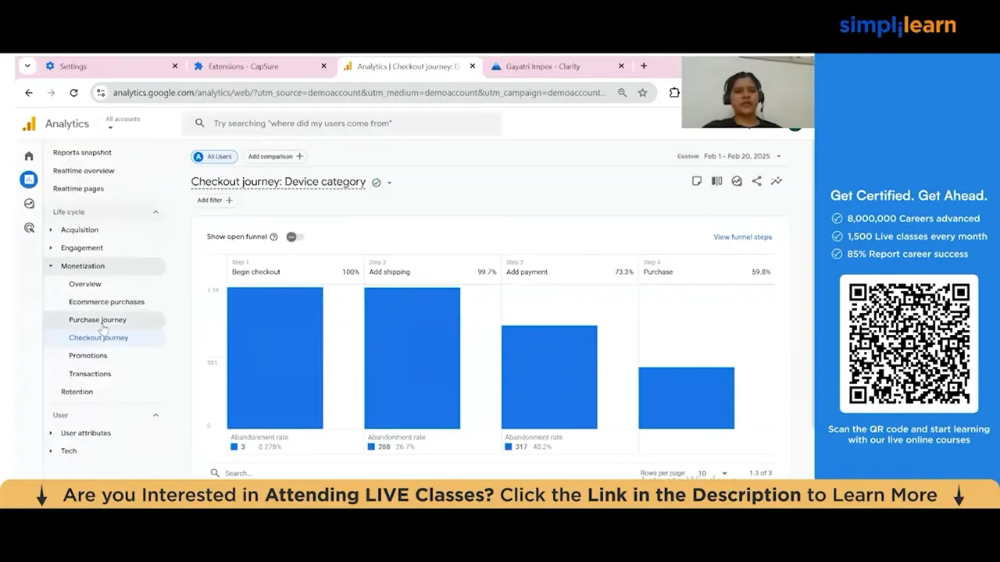
프로모션과 거래 메뉴도 있지만, 프로모션은 캠페인이라 획득 보고서에서 보고 거래는 주문 ID별이라 잘 안 본다고 해요.
유지, 사용자 속성, 기술
- 유지: 신규 대비 재방문 사용자(신규 약 3만 7천 명 중 재방문 8.9천 명)와 평균 120일 가치(LTV(Lifetime Value))를 봐요. 클라이언트가 가장 관심 있어 하는 숫자예요.
- 사용자 속성: 국가·지역·도시·언어·나이·성별·관심사예요. 관심사는 Meta·Google 광고의 관심사 타기팅에 그대로 가져다 써요. '샌프란시스코 사용자', '28일 상위 지출자' 같은 잠재고객 목록은 이 쇼핑몰이 직접 만든 거예요.
- 기술: 브라우저(대개 Chrome), 기기, 폰 모델(iPhone, Pixel 9, Pixel 7 등), 운영체제예요. 모델별 매출을 보고 특정 기기를 겨냥할 수 있어요.
표에 보이는 '(not set)'은 GA가 값을 잡지 못한 거예요. VPN(Virtual Private Network)이나 시크릿 모드 때문일 수도 있지만, 우리 쪽 추적 설정이 잘못됐을 수도 있다고 강사는 덧붙여요.
KPI와 지표, 도구 고르기
이 장은 앞선 광고 수업에서 다룬 지표를 복습하는 자리예요. 강사도 분류 이름은 외울 필요 없고, 면접에서 '정량·정성·후행·선행을 말해 보라'고 묻는 사람은 없다고 해요.
- KPI(Key Performance Indicator) 네 종류: 숫자로 나오는 정량, 글로 나오는 정성, 과거와 비교하는 후행, 앞으로를 예측하는 선행 지표.
- 자주 쓰는 KPI: ROI(Return On Investment)·ROAS(매출 ÷ 광고비), 리드 전환율, 고객 유지율, LTV(첫 구매부터 지금까지 그 고객이 낸 매출), CPL(Cost Per Lead)과 CPA.
CPL과 CPA는 자주 헷갈려요. CPL은 이름·번호·이메일 같은 연락처 하나를 얻는 데 쓴 돈이고, CPA는 그 사람이 실제 고객이 되기까지 쓴 돈이에요.
KPI와 지표는 뭐가 다른가요
슬라이드 왼쪽 KPI 칸은 '기간이 정해져 있고, 행동으로 이어지고, 사업 목표를 향한 진척을 보고, 전 부서에 통하는 높은 관점'이라고 적어요. 오른쪽 지표 칸은 '측정 단위이고, 특정 부서에 해당하는 낮은 관점'이에요.
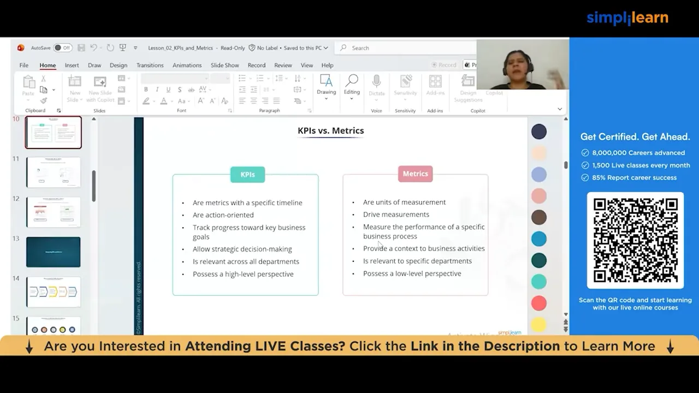
강사의 예시는 이래요. 노출, 도달, 클릭, CPC, CPL은 모두 지표예요. 그중 '우리 사업엔 CPL이 KPI'라고 정하는 거고, 그건 브랜드마다 달라요. 이커머스는 ROAS, 누군가는 광고비 대비 이익, 누군가는 리드 수나 리드의 질이 성공의 정의예요.
KPI를 관리하는 순서는 성공의 정의 → 누구나 숫자를 볼 수 있는 시스템 → 팀·이해관계자와 공유 → 결과로 개선이에요. ROAS가 2배라고 가만히 있지 말고 더 올려야 해요. 목표는 몇 달이면 바뀌니 다시 쓰고, 벤치마크는 업종별로 잡아요. 의류 브랜드 이익률 20%를 전자제품 브랜드에 들이대면 안 되고, B2B(Business to Business)와 B2C(Business to Consumer)도 비교하면 안 돼요.
도구는 써 보고 한두 개로 좁히기
강사는 시장의 도구를 쭉 소개하지만 결론은 단순해요. 처음엔 여러 개 써 보고, 결국 한두 개로 좁히라는 거예요. AI(Artificial Intelligence) 도구도 ChatGPT, Perplexity, Claude, Gemini, NotebookLM을 다 써 본 뒤 한두 개만 남겼다고 해요. 무료판은 개요만 주고 30일쯤 지나면 결제를 요구하니, 고른 것만 유료로 쓰는 게 낫다고 봐요.
| 용도 | 영상이 언급한 도구 | 강사의 평 |
|---|---|---|
| 웹 분석 | Google Analytics | 필수. 대신할 수 없어요 |
| 사업 KPI 대시보드 | Salesforce, Tableau, datapine, Klipfolio 등 | Salesforce와 Tableau를 추천. Tableau는 GA와 연결해 자동 갱신돼요 |
| 휴대폰으로 KPI 보기 | HandyKPI | 이동이 잦은 사람용. GA는 폰에서 보기 불편하대요 |
| 히트맵 | Crazy Egg, Microsoft Clarity, Hotjar, Mixpanel | 하나만 고르면 돼요. 강사는 Clarity를 선호 |
| 소셜 미디어 통합 | Hootsuite (또는 HubSpot) | 채널마다 들어가지 않고 한 곳에서 봐요. 유료 |
| 브랜드 언급 알림 | Google 알리미 | 하나 걸어 두라고 권해요 |
| 채널 자체 분석 | X·Facebook·YouTube 분석 | 플랫폼 안에 있는 무료 도구예요 |
히트맵 도구는 사이트 주소를 주면 방문자 행동을 기록해서, 어디에 오래 머물고 어디를 누르는지 노랑·파랑 점으로 보여 줘요. 아래 슬라이드가 Crazy Egg 화면이에요.
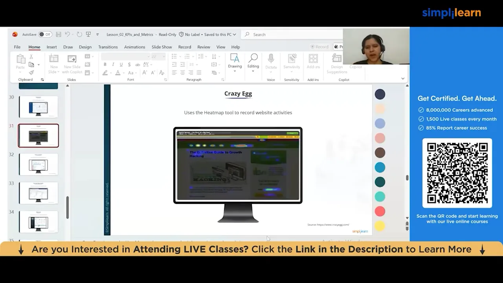
강사는 수업 중에 자기 WordPress 사이트에 Microsoft Clarity 플러그인을 설치해요. WordPress에서 플러그인은 휴대폰의 앱 같은 거라고 설명해요. 사이트가 새것이라 데이터가 없어서, 결과는 9장에서 다시 열어 봐요.
기여 경로와 탐색 보고서
사람들은 한 번에 사지 않아요
광고 메뉴에서 강사가 가장 아끼는 건 '키 이벤트 기여 경로' 보고서예요. 요즘은 검색하다 브랜드를 알고, 소셜 광고를 누르고, 이메일을 받고, 마지막에 YouTube 광고로 사는 식이에요. 이 보고서는 그런 경로마다 전환과 매출이 얼마였는지 보여 줘요.
읽는 법은 이래요. 'Organic Search × 2'는 같은 채널로 두 번 들어와 두 번째에 산 거예요. 아래 화면 32번 줄 'Paid Search → Organic Search × 3'는 검색 광고로 처음 들어왔다가, 나중에 검색 결과로 세 번 돌아와서 산 경로예요. 36번 줄처럼 광고 → 검색 → 광고로 세 번 오간 경로도 있어요.
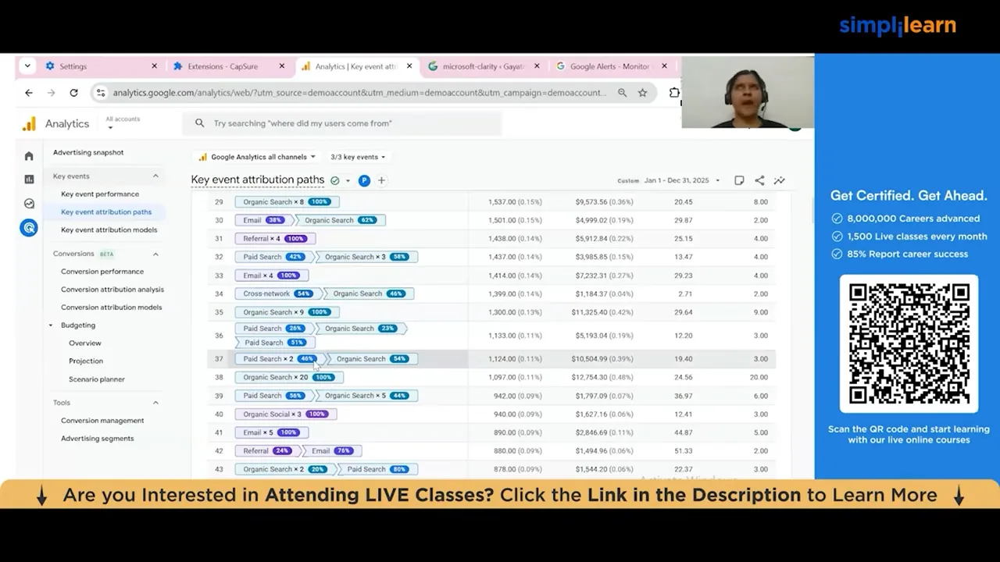
강사가 이 보고서를 쓰는 때는 클라이언트가 '광고비를 이렇게 쓰는데 왜 전환이 안 나오냐'고 할 때예요. 마지막 전환은 검색 결과에서 났어도, 그 사람이 브랜드를 처음 안 건 검색 광고였다는 경로를 보여 줘요. 광고가 없었다면 그 매출도 없었다는 거죠. 이 데이터를 내려받아 보여 주며 광고를 계속 돌릴 시간을 번다고 해요.
마지막 클릭과 데이터 기반
기여 모델 보고서는 같은 매출을 두 방식으로 나눠 보여 줘요. 마지막 클릭은 마지막으로 누른 채널에 100% 공을 줘요. 데이터 기반은 과거 데이터를 보고 인지·고려·구매 전체 흐름에서 각 채널의 몫을 나눠요.
아래 화면에서 Direct는 두 방식 모두 128만 달러로 같아요. 그런데 Organic Search는 마지막 클릭 기준 75만 4천 달러에서 데이터 기반 70만 8천 달러로 줄고(−4.7%), Paid Search는 20만 8천 달러에서 24만 2천 달러로 늘어요(+9.39%).
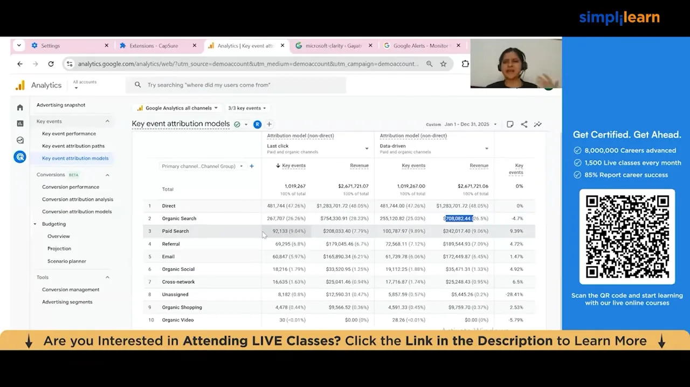
탐색: 자주 받는 질문은 보고서로 만들어 두기
클라이언트는 매일·매주·매달·분기·연간으로 같은 질문을 해요. 그때마다 보고서에 필터 열 개를 거는 대신, 탐색(Explore) 메뉴에서 맞춤 보고서를 한 번 만들어 두고 날짜만 바꿔 보여 줘요.
자유 형식 보고서의 장점은 측정기준을 여러 겹 쌓을 수 있다는 거예요. 일반 보고서는 기본·보조 두 개가 끝이라 '채널별 전환을 도시와 나이로 나눠 줘'에 답하지 못해요. 자유 형식은 다섯 개까지 쌓을 수 있다고 해요.
- 변수 패널에서 날짜, 측정기준(채널, 소스/매체, 도시, 나이, 성별), 측정항목(세션, 평균 세션 시간, 구매 매출, 참여 세션, 사용자)을 골라요.
- 탭 설정 패널로 끌어와요. 패널이 '측정기준을 놓으세요', '측정항목을 놓으세요'라고 자리를 알려 줘요. 행에 채널 → 소스/매체 → 도시 → 캠페인을, 값에 측정항목을 넣어요. 오른쪽 빈 화면에 표가 생겨요
- 필터로 '기본 채널 그룹에 Direct 포함'처럼 질문 범위만 남겨요.
- 세그먼트 비교로 Direct와 유료 트래픽을 나란히 보여 줄 수 있고, 시각화를 도넛·선·막대로 바꿀 수 있어요.
그 밖에 세그먼트 중복(직접 유입과 모바일이 얼마나 겹치나), 유입경로 탐색(성별별로 세션 시작부터 구매까지)도 보여 줘요. 다만 강사는 클라이언트가 가장 쉽게 알아보는 건 자유 형식 표라서 그것만 알아도 충분하다고 해요.
미디어별 지표, 디스플레이 지표, ROI
유료, 획득, 자체 미디어
미디어는 세 종류로 나눠요. 유료 미디어는 광고, 획득 미디어는 PR(Public Relations)·리뷰·입소문으로 얻은 관심, 자체 미디어는 웹사이트·블로그·YouTube 채널처럼 브랜드가 가진 곳이에요. 셋은 보는 숫자가 달라요.
| 미디어 | 예시 | 볼 숫자 |
|---|---|---|
| 유료 | 검색·디스플레이·소셜 광고 | CTR, 노출, CPC 등 + 품질평가점수 |
| 획득 | PR, 리뷰, 입소문 | 검색 노출 증가, 추천 트래픽, 도메인 권위, 자연 검색 트래픽, 소셜 점유율 |
| 자체 | 웹사이트, 블로그, YouTube 채널 | 매출, 이탈(churn)률, CPL, 참여율, 고객 유지, 전환, 브랜드 인지도, LTV, 만족도 |
유료 미디어 지표는 앞선 수업에서 다뤘다며, 강사는 품질평가점수만 새로 짚어요. Google Ads는 키워드마다 점수와 함께 예상 CTR, 방문 페이지 만족도, 광고 관련성을 '평균 이하·평균·평균 이상'으로 보여 줘요. 아래 화면에서 빨간 상자가 '평균 이하'로 뜬 칸이에요.
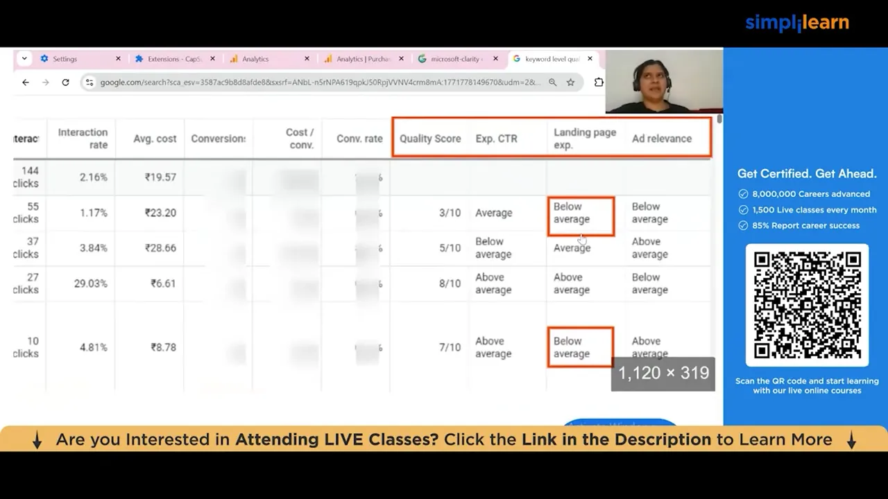
강사는 방문 페이지 만족도는 마케터 손을 벗어난 영역이라고 봐요. 광고 관련성은 마케터가 고쳐요. 광고 문구에 키워드를 넣고 핵심 장점을 담으면 되고, 그러면 예상 CTR도 따라 좋아진다고 해요.
획득 미디어를 했다면 브랜드 검색이 늘었는지, 추천 트래픽이 늘었는지, 사람들이 공유하는지를 봐요. 강사는 여기서 Moz의 도메인 권위 점수를 언급하며 Google이 이 점수를 꽤 믿는다고 말해요.
강사가 길게 강조한 건 유료 광고 의존이에요. 광고만으로 큰 스타트업은 광고를 끄면 매출이 무너지고, 켜 두면 경쟁 때문에 이익이 안 나요. Amazon·Myntra 같은 플랫폼에만 기대도 수수료가 이익을 깎아요. 그래서 PR·인플루언서·블로그·영상과 자기 사이트를 함께 키우고, 그쪽에서 매출이 나기 시작하면 광고비를 서서히 줄이라고 해요. 완전히 끄는 게 아니라 줄이는 거예요.
디스플레이 광고는 '보였는지'부터 따져요
디스플레이 캠페인은 다른 사이트와 앱에 뜨는 배너 광고예요. 한 페이지에 여러 브랜드 배너가 걸리니 '떴다'와 '봤다'를 구분해야 해요. 슬라이드는 측정 지표 세 가지를 꼽아요.
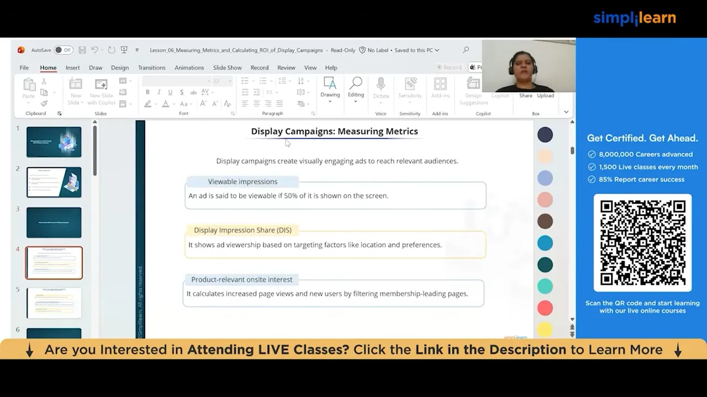
- 조회 가능 노출: 배너 면적 50% 이상이 화면에 보였을 때만 세요. 페이지 아래쪽 배너는 스크롤하지 않으면 그냥 노출이에요.
- 노출 점유율: 받은 노출 ÷ 받을 수 있었던 노출이에요. 20%면 아직 80%의 여지가 있어요.
- 브랜드 검색 수요: 광고를 많이 돌린 뒤 브랜드 이름으로 직접 검색하는 사람이 늘었나요. 매출만 보다 놓치기 쉬운 간접 지표예요.
조회 불가 노출이 생기는 이유도 슬라이드에 정리돼 있어요. 1초도 안 돼 스크롤해 지나친 경우, 광고 자리가 화면에 들어오지 않은 경우, 광고가 뜨기 전에 스크롤한 경우, 광고 자리가 채워지기 전에 스크롤한 경우예요.
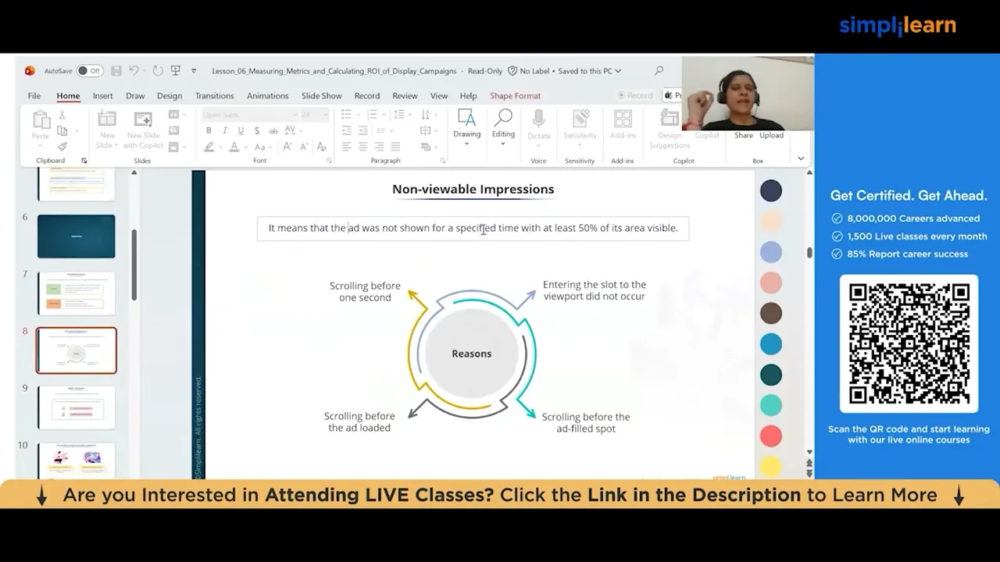
면접에선 '노출 점유율이 60%인데 90%로 어떻게 올리겠냐'를 자주 묻는대요. 답은 두 가지예요. 예산을 늘리거나, 광고 품질을 높이는 거예요. 예산이 있는데도 낮다면 아무도 누르지 않는 매력 없는 광고라서 Google이 덜 보여 주는 거예요. 다만 본 상품을 자동으로 띄우는 리마케팅 배너는 손댈 게 없고, 직접 만든 배너라면 다시 만들어야 해요. 강사는 지표 정의를 외우기보다 '어떻게 올리겠냐'에 답할 수 있어야 한다고 강조해요.
ROI는 사업 모양에 따라 다르게 계산해요
ROI는 (순이익 ÷ 투자 비용) × 100이에요. 투자 비용이 꼭 돈은 아니에요. 강사 자신처럼 강의하는 사람이나 프리랜서·컨설턴트는 시간이 투자 비용이에요. 아래 슬라이드가 두 사업 모양의 공식이에요.
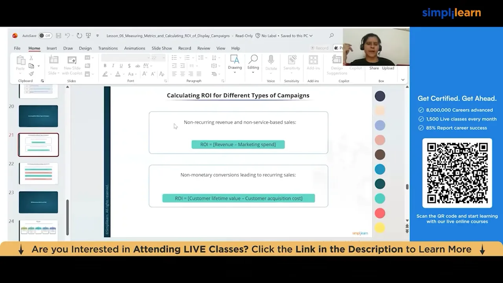
- 한 번 사는 사업(MBA(Master of Business Administration) 과정): 학생이 낸 등록금 − 그 학생을 데려오는 데 쓴 마케팅비.
- 계속 사는 사업(이커머스·퀵커머스): 고객 LTV − 첫 광고부터 리마케팅, 이메일까지 그 고객에게 쓴 비용 전부. 강사는 7~8년째 Myntra 고객인 자신을 예로 들어요. 이미 고객인데도 계속 광고를 받으니 그 비용까지 빼야 한다는 거예요.
- 리드가 늦게 전환되는 사업(부동산, 교육, 금융, B2B): 오늘 받은 리드가 두세 달 뒤 계약되니, 월별 매출 성장에서 평균 자연 성장분을 빼고 마케팅비로 나누는 '기여 ROI'로 봐요.
PPC(Pay Per Click) 평가의 목적은 '새는 곳을 찾아 막아서 같은 돈으로 더 많이 얻는 것'이에요. 전환율, 품질평가점수, 노출, CTR, 평균 순위, 노출 점유율, CPC, CPA, ROAS를 봐요. 어느 채널이 잘될지는 강사도 장담하지 못한다며, 테스트하고 배우고 적용하라고 해요.
엑셀 실습: 키워드 네 바구니와 입찰가 조정
프리랜서로 새 클라이언트를 얻을 때, 클라이언트는 광고 계정 권한 대신 성과 엑셀을 줘요. 키워드 이름은 숫자 ID로 가리고 '이 데이터를 보고 무엇을 고치겠냐'고 묻는 거예요. 강사는 첫 해외 클라이언트에게 받은 Google 검색 캠페인 시트로 이 과정을 그대로 보여 줘요. 세팅은 누구나 YouTube 보고 하지만, 돈을 받는 건 숫자를 읽고 최적화하는 능력이라는 게 이 장의 요지예요.
볼륨과 효율로 키워드 나누기
시트엔 키워드 1,692개의 클릭, 노출, CPC, 품질평가점수, 전환, 노출 점유율, 비용이 있어요. 클라이언트가 정한 목표는 CPA 129예요. 강사는 먼저 기준을 정해요.
- 볼륨 = 노출수. 몇 번 보였나예요.
- 효율 = CPA. 적은 돈으로 얼마나 많은 결과를 냈나예요. 클릭은 효율이 아니에요. 최종 결과를 봐야 해요.
키워드마다 CPA가 없으니 비용 ÷ 전환으로 열을 하나 만들고, 첫 칸 수식을 끝까지 끌어내려요. 아래 화면 오른쪽 노란 칸이 목표 CPA 129예요.
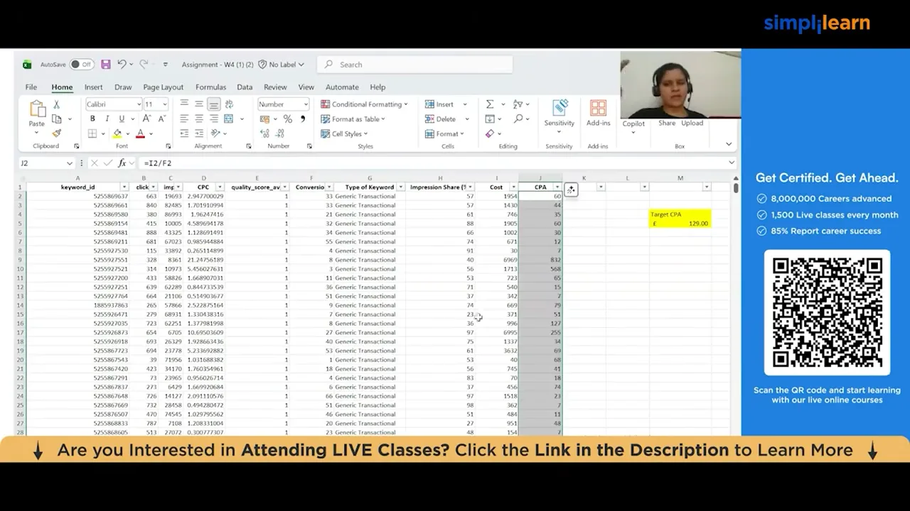
효율 기준선은 목표 CPA 129가 있으니 그대로 써요. 볼륨은 클라이언트가 기준을 주지 않았으니 노출수의 중앙값을 써요. 강사는 수강생에게 '왜 평균이 아니라 중앙값이냐'고 물어요. 노출수가 아주 작은 값과 아주 큰 값으로 들쭉날쭉해서 평균은 한쪽으로 끌려가요. 값이 65, 62, 58처럼 고르면 평균도 괜찮아요. 이 시트의 중앙값은 43,323이었어요. 목표 CPA가 없다면 CPA도 중앙값으로 기준을 잡으면 돼요.
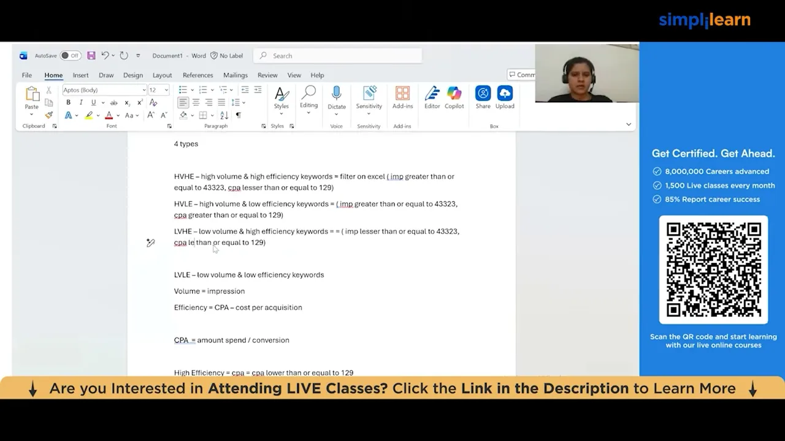
엑셀 숫자 필터로 노출과 CPA 조건을 걸고, 걸러진 표를 바구니별 시트에 복사해요. 네 시트의 키워드 수를 더해 683 + 163 + 665 + 181 = 1,692로 원래 개수와 맞는지 꼭 확인해요. 복사하다 빠진 게 없는지 보는 거예요.
바구니마다 돈과 전환을 요약하기
목록만으론 부족해요. 바구니마다 키워드 수, 총비용, 총전환, 전환당 비용, 비용 비중(바구니 비용 ÷ 전체 비용), 전환 비중(바구니 전환 ÷ 전체 전환)을 계산해요. 캠페인 전체는 비용 ₹38,39,658(약 384만 루피), 전환 37,930건이었어요.
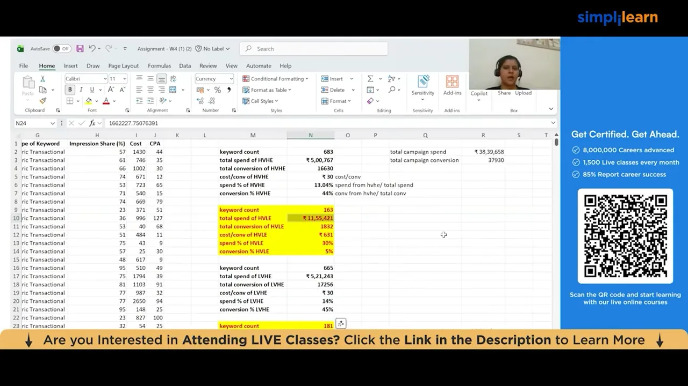
네 칸을 한 장에 모으면 아래와 같아요. 강사가 시트 숫자를 하나로 정리한 그림이에요.
비용과 전환의 비중만 나란히 놓으면 문제가 더 선명해요. 잘되는 두 바구니는 비용 27%로 전환 89%를 냈고, 안 되는 두 바구니는 비용 73%(약 280만 루피)를 쓰고 전환 11%를 냈어요.
강사는 키워드를 하나씩 봤다면 며칠이 걸렸을 일을 20분 만에 끝냈다며, 이게 엑셀과 논리를 아는 차이라고 해요.
최적화 제안: '멈추자'는 답이 아니에요
여기까지는 인사이트예요. 클라이언트에게는 무엇을 하겠다는 최적화까지 말해야 해요. 강사가 꼽은 초보의 실수는 '안 되는 키워드는 멈추자'예요. 게으르거나 포기하는 것처럼 보인다는 거예요.
- 잘되는 키워드를 별도 캠페인으로 빼요 — Google Ads 검색 캠페인은 예산을 키워드 단위가 아니라 캠페인 단위로만 정할 수 있어요. 그대로 두면 나쁜 키워드가 계속 예산을 먹어요. 썩은 사과에서 좋은 사과를 골라내는 거예요.
- 그중 노출 점유율 95% 미만인 키워드에 예산을 더 줘요 — 이미 95% 넘게 노출된 키워드는 더 늘릴 여지가 없어요. 665개 중 51개가 그랬어요.
- 나쁜 키워드는 품질평가점수부터 고쳐요 — 163개 중 점수 5 이상은 42개뿐이었어요. 방문 페이지 만족도, 광고 관련성, 예상 CTR을 손보고, 그래도 안 되면 그때 멈춰요.
기기·성별·지역 시트엔 입찰가 조정
클라이언트는 기기, 성별, 지역, 디스플레이 게재 사이트, 잠재고객별 시트도 함께 줘요. 강사는 기기 시트 하나만 같이 풀고 나머지는 과제로 남겨요. 캠페인 A~F의 모바일·데스크톱·태블릿별 전환과 비용이 있고, 목표 CPA는 172예요.
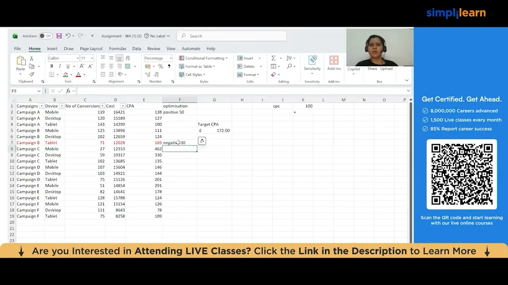
기기가 안 된다고 끄지 말고 입찰가 조정을 걸어요. 기본 클릭당 입찰가가 100이라면, +50은 '이 기기에선 150까지 내겠다', −30은 '70까지만 내고 그 값에 전환이 안 나오면 안 보여도 된다'는 뜻이에요. CPA가 목표보다 한참 낮은 기기는 입찰가를 50% 올려도 CPA가 목표 안에 머물러서 손해가 없고, 전환은 더 얻을 수 있어요.
브랜드 지표, 이커머스 퍼널, 이탈률과 종료율
캠페인 분석 도구로 강사는 Google 키워드 플래너(무료, 검색량과 경쟁 정도), Search Console, GA를 추천해요. 그다음엔 마케팅을 넘어 브랜드 전체를 보는 지표로 넘어가요.
브랜드 전체를 보는 지표
아래 슬라이드가 CES(Customer Effort Score) 공식이에요. 노력 점수의 합을 응답자 수로 나눠요. 슬라이드 아래 칸은 CES가 오르면 고객이 목적을 이루려고 도움이 더 필요하다는 뜻이고, 느린 속도나 불분명한 정책이 원인일 수 있다고 적어요.
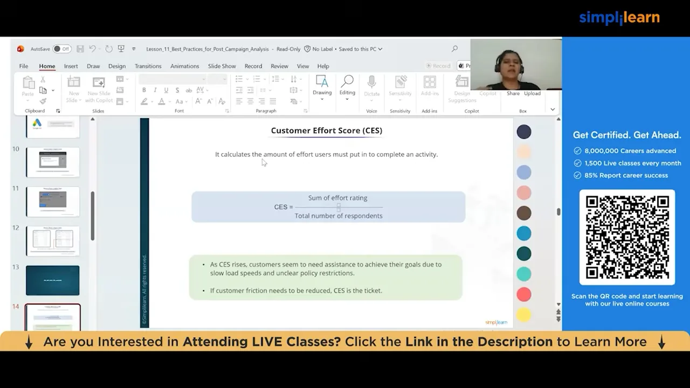
| 지표 | 영상이 준 계산 | 무엇을 알려 주나 |
|---|---|---|
| CES (고객 노력 점수) | 노력 점수 합 ÷ 응답자 수 | 목적을 이루는 데 고객이 얼마나 애썼나 |
| NPS(Net Promoter Score) (순추천지수) | 추천자 % − 비추천자 % | 남에게 추천할 만큼 충성스러운가 |
| CSAT(Customer Satisfaction Score) (고객 만족도) | 만족 고객 수 ÷ 응답자 수 × 100 | 리뉴얼·신상품 뒤 만족도가 떨어졌나 |
| TTR(Time To Resolution) (해결 시간) | 해결에 걸린 총시간 ÷ 해결 건수 | 고객 문의를 얼마나 빨리 처리하나. 낮을수록 좋아요 |
이런 숫자는 설문으로 모아요. 돈을 안 쓰려면 Google 설문지를 지인에게 돌리지만, 제대로 하려면 브랜드 리프트 설문을 써요. YouTube 광고 중에 '그래픽 디자인에 써 본 도구는? Canva / Adobe …' 같은 질문이 뜨는 게 그거예요. 우리 브랜드를 고르는 사람이 많을수록 인지도가 있는 거고, 적으면 인지 캠페인이 더 필요하다는 신호예요.
새 기능이나 앱 리뉴얼 뒤에는 행동 데이터를 봐요. 강사는 인도 HDFC(Housing Development Finance Corporation) 은행이 앱 화면을 바꾼 걸 예로 들어요. 새 기능을 누가 쓰는지, 쓰기 쉬운지, CTA(Call To Action) 버튼을 누르는지 보고, 안 누르면 크기나 모양을 바꿔요. 앱 설치 캠페인 성과는 GA나 Adobe Analytics보다 AppsFlyer가 낫다고 해요.
이커머스 퍼널의 단계별 전략
퍼널은 인지 → 관심 → 구매 → 재구매예요. 먼저 고객 여정을 그려서 어느 채널이 상품 페이지로 사람을 가장 많이 데려오는지, 어느 페이지에서 가장 많이 머무는지 찾아요. 그다음 단계마다 쓸 전략이에요.
- 상단(상품 페이지로 사람 모으기): 상품 페이지 SEO와 키워드, 소셜, 광고, 인플루언서·제휴, QR(Quick Response) 코드를 넣은 지면 광고와 유명인 광고, 애니메이션·동영상으로 된 리치 미디어 광고, 리타기팅.
- 중단(고민하는 사람): 상품 소식·블로그·전자책을 담은 이메일, 사용 가이드, 챗봇과 FAQ(Frequently Asked Questions), 좋은 CTA. 긴 신청서를 끝까지 채우는 사람은 진짜 고객이라 리드 거르기에도 써요.
- 하단(살 사람): 맞춤 제안, 백서, 무료 체험, 사례 공유, 개인화 콘텐츠. 무료 체험 예로는 Perplexity가 인도 통신사와 손잡고 1년간 무료로 풀어 사람들을 길들인 일을 들어요.
판매 후 전략은 아래 슬라이드의 다섯 칸이에요. 추천 요청, 재판매, 업셀·크로스셀, 신상품 알림, 감사 인사예요.
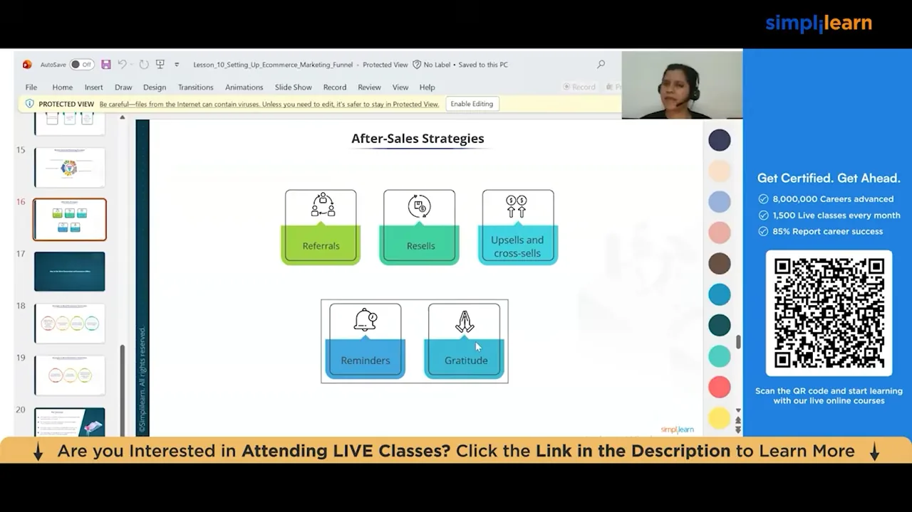
전환을 끌어올리는 방법으로는 라이브 채팅과 자세한 상품 설명, 장바구니에 담고 안 산 사람에게 '10% 더 할인' 메일 보내기, 모바일 최적화를 꼽아요. 가구처럼 큰 물건은 데스크톱으로 많이 오지만, 객단가 낮은 옷은 대부분 모바일로 와요. 좋은 사진과 영상, 개인화, 후기도 빠질 수 없어요.
A/B 테스트는 이렇게 해요. 홈페이지와 카테고리 페이지를 각각 손보고, 광고 하나는 홈페이지로, 다른 하나는 카테고리 페이지로 보내서 어느 쪽 반응이 좋은지 봐요. 사이트 수정은 개발자가 하지만, 광고를 어디로 보낼지는 마케터가 정해요.
이탈률과 종료율
면접 단골 질문이라고 해요. 슬라이드 아래 메모가 핵심이에요. '모든 이탈은 종료지만, 모든 종료가 이탈은 아니다.'
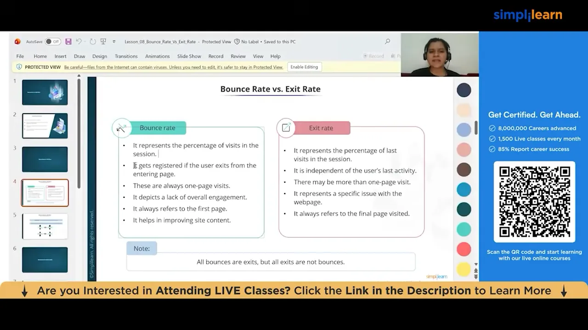
- 이탈률 = 한 페이지만 본 방문 ÷ 전체 방문. 참여가 부족하다는 뜻이고, 마케터가 줄일 수 있어요.
- 종료율 = 그 페이지에서 나간 수 ÷ 그 페이지 조회수. 이미 여러 페이지를 봤으니 그 페이지 자체에 문제가 있다는 뜻이에요. 강사는 종료율은 마케터 손 밖이라고 봐요.
강사가 말한 기준은 40% 근처면 괜찮고, 50%면 경고, 70%를 넘으면 고쳐야 해요. 페이지 종류별 기준은 아래 슬라이드에 있어요.
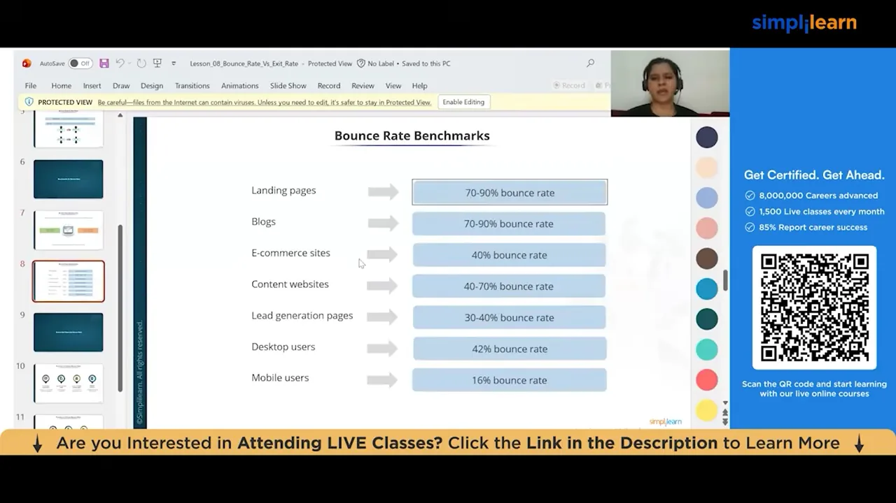
이탈률을 줄이는 법은 이래요.
- 광고가 약속한 걸 페이지가 지키나요? 광고엔 '50% 할인'인데 페이지에 없으면 속인 거예요.
- 맞는 사람만 데려오나요? 금융 회사가 연예에 관심 있는 사람을 타기팅하면 틀린 거예요.
- 랜딩 페이지를 여러 개 만들어 비교했나요? 맞춤법, 내용, UI·UX를 다듬어요.
- 로딩이 빠른가요? 사람들은 2~3초도 기다리지 않아요.
- 거슬리는 팝업이 없나요? 특히 사려고 상품을 보는 중에 팝업이 뜨면 안 돼요.
종료율에는 나가는 사람에게 묻는 종료 설문, 비슷한 상품 추천, 좋은 CTA가 도움이 돼요. 강사는 좋은 페이지를 보는 눈은 광고를 많이 돌리고 경쟁사 페이지를 많이 보며 길렀다고 해요.
GA4 설치부터 히트맵·Search Console까지
사이트에 GA4 붙이기
강사가 가족 사업 사이트에 GA4를 처음부터 다시 연결해 보여 줘요. 계정 만들기는 1장과 같고, 데이터 스트림을 만들 때 하나를 꼭 챙기라고 해요. '향상된 측정'을 켜 두면 페이지 조회, 스크롤, 클릭, 동영상 시청, 양식 입력이 따로 설정하지 않아도 잡혀요.
코드를 붙이는 방법은 사이트를 만든 도구에 따라 달라요.
- WordPress: 플러그인 추가 화면에서 'Site Kit by Google'을 찾아 설치하고 활성화해요. 아래 화면 왼쪽 G 로고 카드가 그 플러그인이에요.
- 직접 코딩한 사이트: '수동 설치'의 코드를 개발자에게 주거나 Google 태그 관리자로 넣어요.
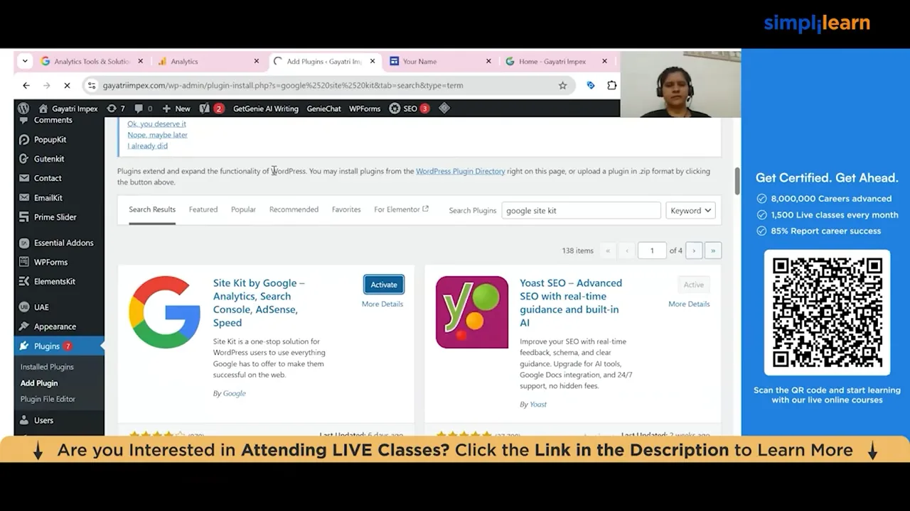
Site Kit 설정에서 Analytics를 연결할 때 GA와 WordPress를 같은 Google 계정으로 쓰면 측정 ID가 알아서 맞춰져요. 테마의 헤더 코드에 직접 붙이는 방법도 있지만, 공들여 만든 사이트가 깨질 수 있어 권하지 않아요.
무료 사이트 빌더 Google Sites는 더 쉬워요. 설정 → 애널리틱스에 측정 ID(G-로 시작)만 넣으면 돼요. 강사는 과제로 사이트를 만들어야 한다면 WordPress 말고 Google Sites로 하라고 권해요.
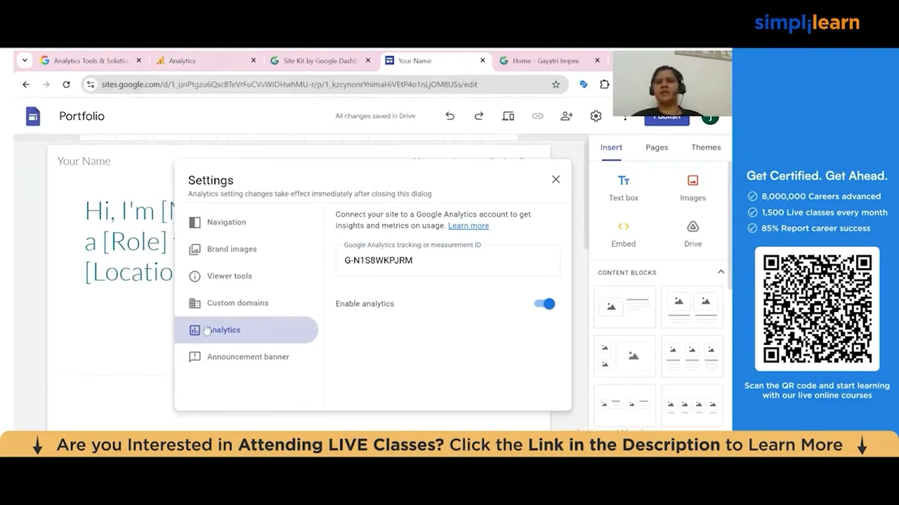
데이터는 24~48시간 뒤부터 GA에 보여요. 그사이 Chrome 확장 프로그램 Google Tag Assistant로 사이트를 열어, GA 관리 화면과 같은 측정 ID가 잡히는지 확인해요.
설치 후 바로 바꿀 설정
첫째는 세션 타임아웃이에요. 데이터 스트림 → 태그 설정 구성 → 세션 시간 제한 조정으로 들어가요. 강사는 기본 30분을 5분으로 줄이고, 참여 세션 타이머는 10초 그대로 둬요. 아래 화면의 '0시간 05분', '10초'가 그 값이에요.
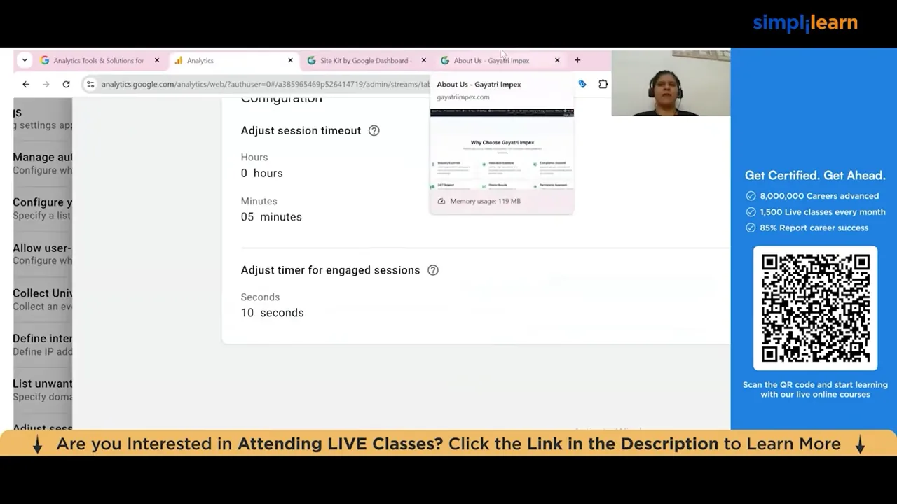
둘째는 이벤트와 키 이벤트예요. 관리 → 이벤트 → 이벤트 만들기에서 이름을 정해요. 강사는 '문의하기 양식 제출'을 Contact_Us로 만들어요. 중요한 행동이니 '키 이벤트로 표시' 토글을 켜요.
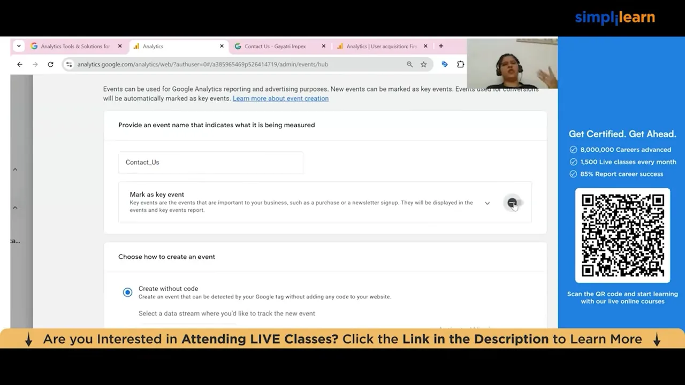
- 기본 값: 리드 생성이면 넣지 않고, 이커머스라면 넣어요.
- 집계 방식: '이벤트마다 1회'와 '세션마다 1회' 중 강사는 이벤트마다 1회를 권해요. 누가 들어올 때마다 다 세고 싶어서요.
셋째는 잠재고객과 세그먼트예요. 기본 잠재고객은 '모든 사용자'와 '구매자'뿐이라, 여성 사용자, 장바구니에 담은 사람, 10일 동안 안 온 사람처럼 클라이언트가 원하는 그룹을 직접 만들어요. 보고서 비교 메뉴엔 직접·자연·유료, 모바일·웹·태블릿만 있으니 '장바구니 vs 위시리스트' 같은 비교가 필요하면 세그먼트를 만들어요.
Watchfinder 사례: 산 듯 말 듯한 사람만 다시 부르기
Watchfinder는 GA로 '사이트에 와서 관심은 보였지만 사지 않은 사람' 잠재고객을 만들었어요. 이 사람들을 구매 여정 단계, 지역, 언어, 행동으로 다시 나눠 맞춤 리마케팅을 했어요. 런던 사람과 다른 지역 사람에게 다른 광고를 보여 주는 식이에요.
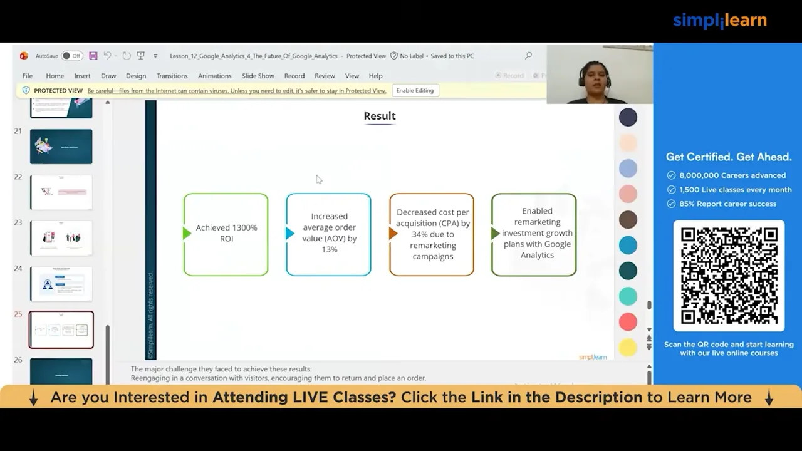
강사는 GA4 관리 화면의 'Google Ads 링크'로 두 계정을 연결하라고 해요. 그러면 GA에서 만든 잠재고객이 Google Ads로 넘어가 바로 리마케팅 대상으로 쓸 수 있어요. Display & Video 360, Search Ads 360 같은 Google 광고 플랫폼에도 되지만, Meta 같은 다른 플랫폼으로는 넘길 수 없다고 해요.
히트맵으로 페이지 안을 보기
4장에서 설치한 Microsoft Clarity를 며칠 뒤 다시 열어요. 아래 클릭 히트맵에서 위쪽 메뉴 바 전체가 빨갛게 칠해져 있어요. 클릭이 4번 있었고, 그 영역이 전체 클릭의 66.67%를 차지했다는 뜻이에요.
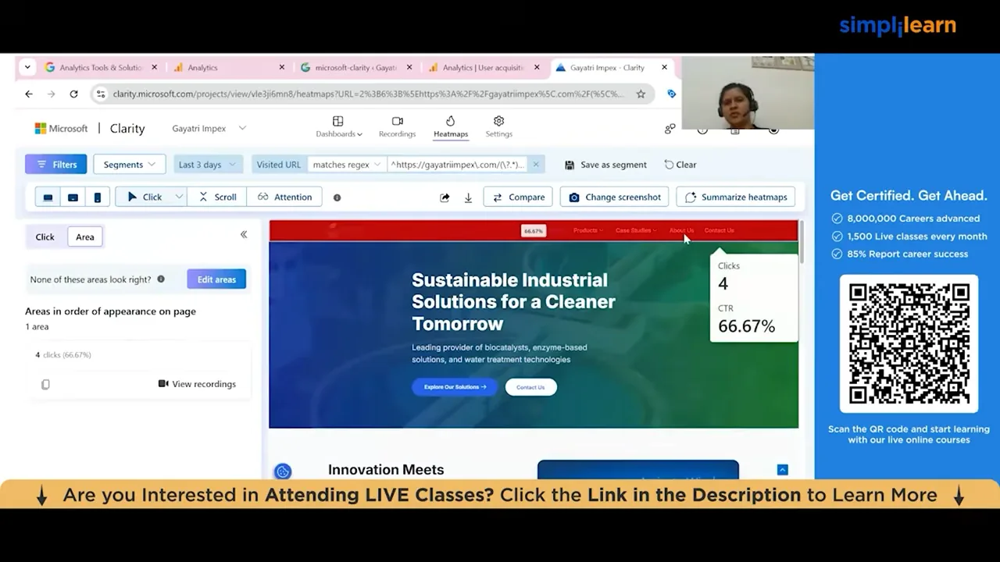
스크롤 히트맵은 사람들이 페이지를 어디까지 내렸는지 색으로 보여 줘요. 빨강이 100%, 아래로 갈수록 초록·파랑·검정으로 줄어요. 아래 화면 가운데 '40%' 표시는 방문자의 40%만 그 지점까지 내려왔다는 뜻이에요.
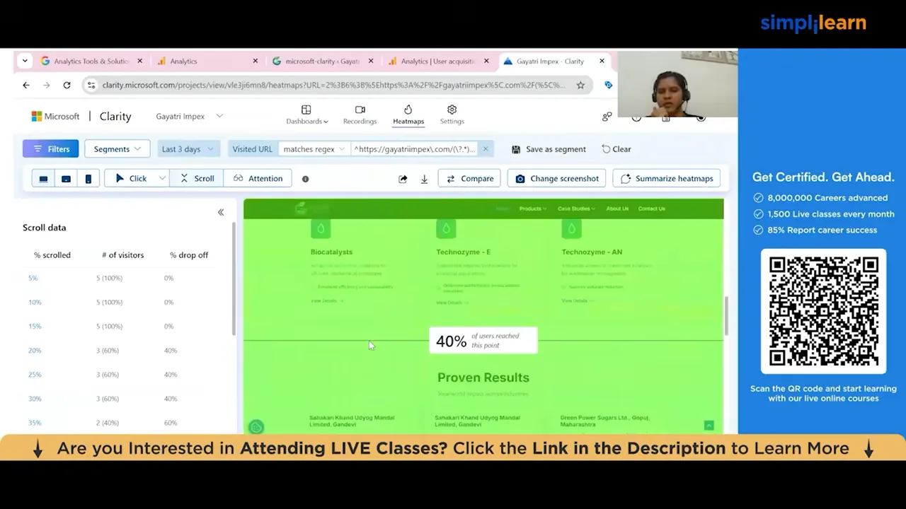
강사는 그 자리에서 결론을 내요. 사례 페이지는 아무도 누르지 않았고, 아래쪽은 글이 많아서 안 읽힌다는 거예요. 아이콘 대신 상품 사진을 넣고 글을 글머리표로 바꿔서 A/B 테스트를 해 보겠다고 해요. Clarity는 방문자가 움직인 걸 그대로 다시 보는 세션 녹화와 히트맵 AI 요약도 있어요. 강사는 Crazy Egg, Hotjar, Clarity를 다 써 봤는데 Clarity가 무료판에서 가장 많이 줘서 Clarity를 권해요.
히트맵에서 볼 숫자는 스크롤 깊이, 클릭 분포(빨강이 가장 많이, 파랑이 가장 적게), 마우스 이동이에요. CTA 자리가 차갑게 칠해지면 아무도 누르지 않는다는 뜻이에요.
Search Console, 사이트맵, robots.txt
Search Console에 사이트를 등록하면 Google에 '새 사이트가 있다'는 신호가 가요. 그러면 Google 크롤러가 와서 페이지를 읽고(크롤링) 저장해 두고, 나중에 관련 검색이 들어오면 순위를 매겨 보여 줘요. WordPress라면 Site Kit에서 Search Console도 바로 연결할 수 있어요.
아래 '페이지 색인 생성' 화면에서 회색 칸 2는 색인되지 않은 페이지, 초록 칸 4는 색인된 페이지예요. 색인이 안 된 이유도 알려 줘요. 강사 사이트에선 404(페이지 없음)와 리디렉션이 이유였어요.
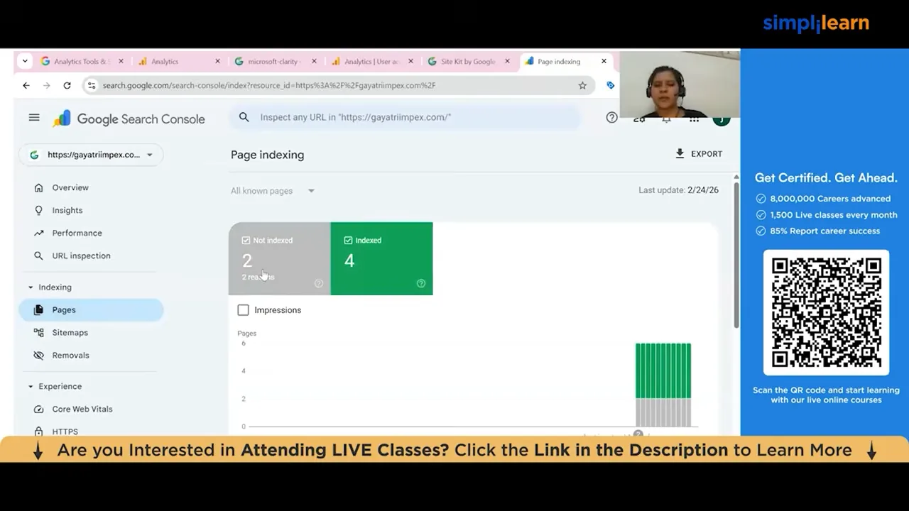
- URL 검사: 특정 페이지가 색인됐는지, 문제가 없는지 확인해요.
- 사이트맵: 사이트의 모든 URL을 적은 지도예요. 크롤러가 어디서 시작해 어디까지 읽을지 알려 줘요. 보통 자동으로 만들어지고, Search Console에 꼭 제출해야 해요. 안 내면 일부 페이지가 색인되지 않을 수 있어요.
- robots.txt: 크롤러에게 들어오지 말라고 알리는 파일이에요. 강사는 장바구니, 주문·결제처럼 고객 정보가 있는 페이지와 만들고 있는 페이지를 예로 들어요.
아래가 강사 사이트의 robots.txt예요. 'User-agent: *'는 모든 크롤러에게 적용한다는 뜻이고, 'Disallow:' 뒤에 막을 경로를 적어요. 이 파일엔 Amazonbot, GPTBot, ClaudeBot 같은 AI 크롤러를 사이트 전체(/)에서 막는 줄과 사이트맵 주소도 들어 있어요.
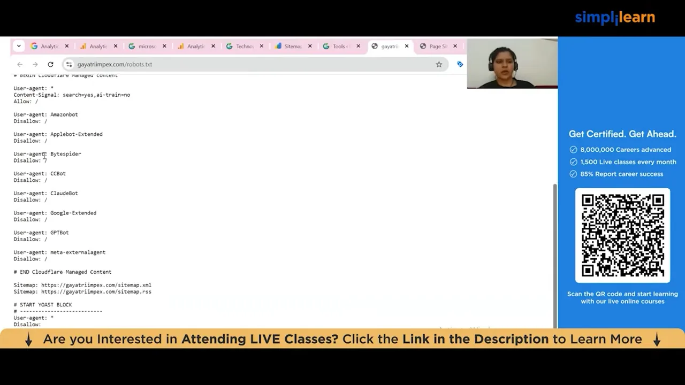